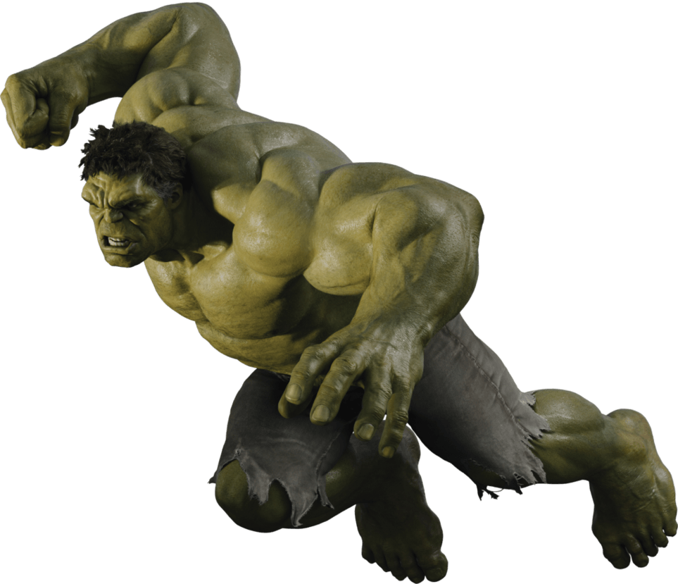

El personaje fue creado por los escritores Stan Lee y Jack Kirby siendo su primera aparición en The Incredible Hulk publicado en mayo de 1962. El personaje es a la vez Hulk, un ser humanoide enorme de piel verde, corpulento y musculoso que posee una gran fortaleza física, y su alter ego el Dr. Robert Bruce Banner, físicamente débil, socialmente retraído y emocionalmente reservado, las dos personalidades existentes como independientes y con resentimiento de la otra
